| 7 |
LinearSVM |
Linear Support Vector Classification |
207.476285 |
0.234361 |
107 |
82 |
43 |
18 |
0.856 |
0.656 |
0.713333 |
0.756 |
0.244 |
0.778182 |
1.097060 |
0.003751 |
3.320442 |
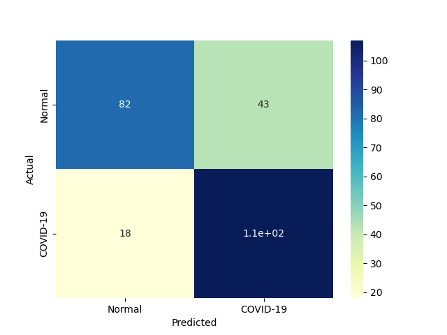 |
 |
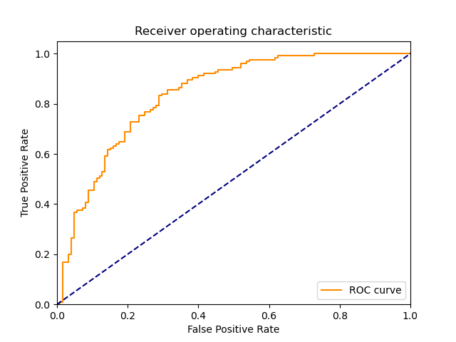 |
| 11 |
AdaBoostClassifier |
An AdaBoost classifier |
512.661060 |
5.462556 |
98 |
89 |
36 |
27 |
0.784 |
0.712 |
0.731343 |
0.748 |
0.252 |
0.756757 |
1.072738 |
0.001476 |
0.138535 |
|
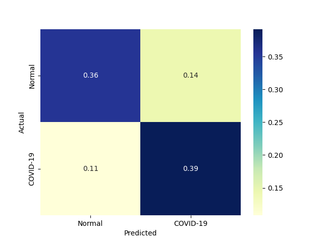 |
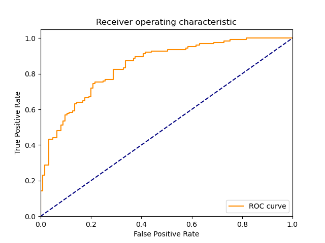 |
| 8 |
NonLinearSVM |
Non Linear Support Vector Classification |
175.064518 |
122.917134 |
118 |
66 |
59 |
7 |
0.944 |
0.528 |
0.666667 |
0.736 |
0.264 |
0.781457 |
1.056983 |
0.004464 |
0.006358 |
 |
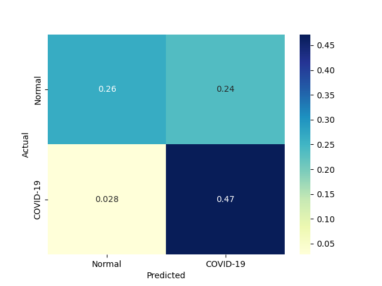 |
 |
| 9 |
LP |
Linear perceptron classifier |
11.383222 |
0.187485 |
87 |
99 |
26 |
38 |
0.696 |
0.792 |
0.769912 |
0.744 |
0.256 |
0.731092 |
1.056362 |
0.064225 |
3.899467 |
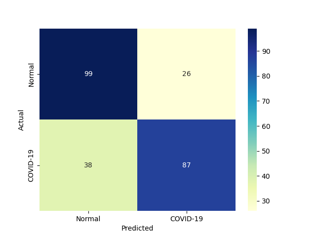 |
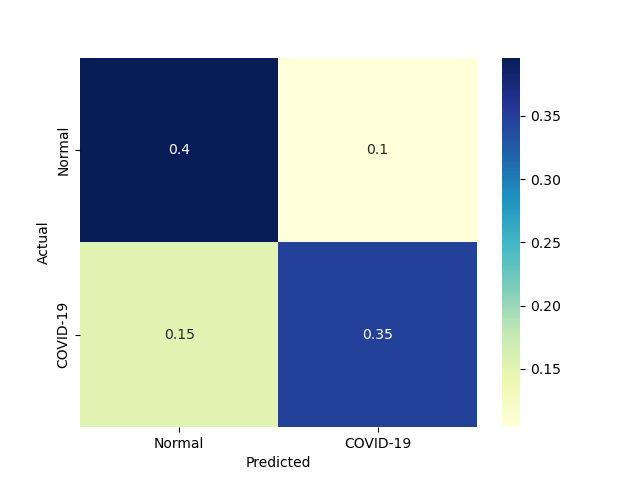 |
 |
| 1 |
RealBoost |
An RealBoost classifier |
4417.011824 |
0.031248 |
107 |
70 |
55 |
18 |
0.856 |
0.560 |
0.660494 |
0.708 |
0.292 |
0.745645 |
0.993737 |
0.000169 |
23.862266 |
 |
 |
 |
| 10 |
MLP |
Multi-layer Perceptron classifier. |
413.667117 |
0.343722 |
124 |
47 |
78 |
1 |
0.992 |
0.376 |
0.613861 |
0.684 |
0.316 |
0.758410 |
0.962247 |
0.001833 |
2.206461 |
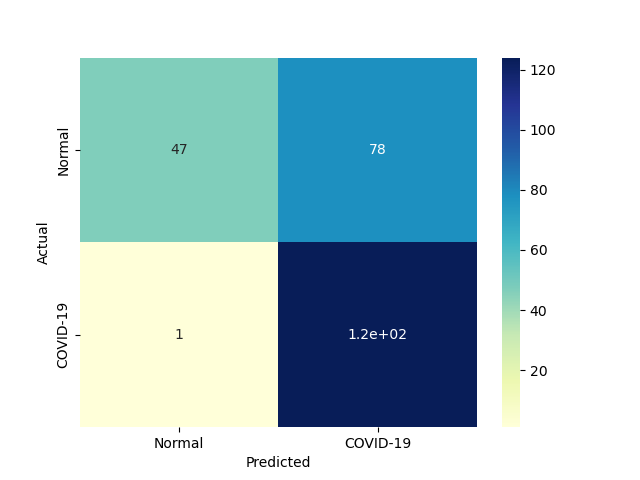 |
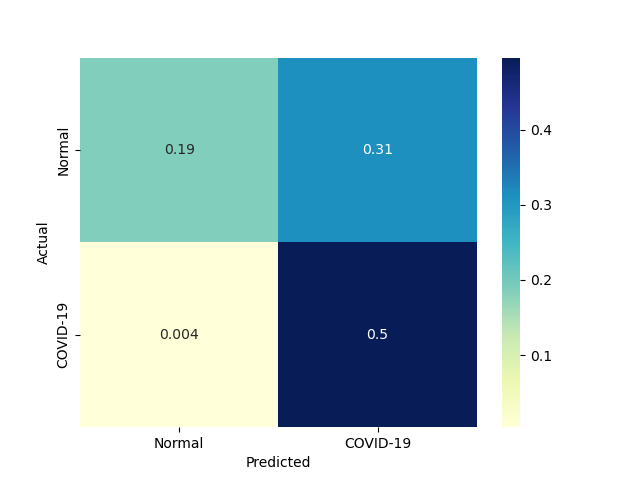 |
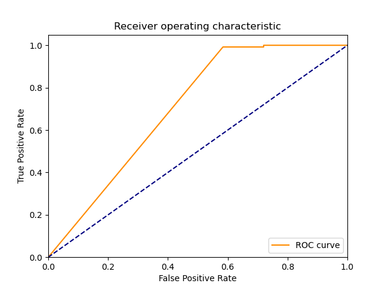 |
| 6 |
KNeighborsClassifier |
Classifier implementing the k-nearest neighbors vote |
0.078159 |
1.864193 |
117 |
53 |
72 |
8 |
0.936 |
0.424 |
0.619048 |
0.680 |
0.320 |
0.745223 |
0.951016 |
9.534722 |
0.399756 |
 |
|
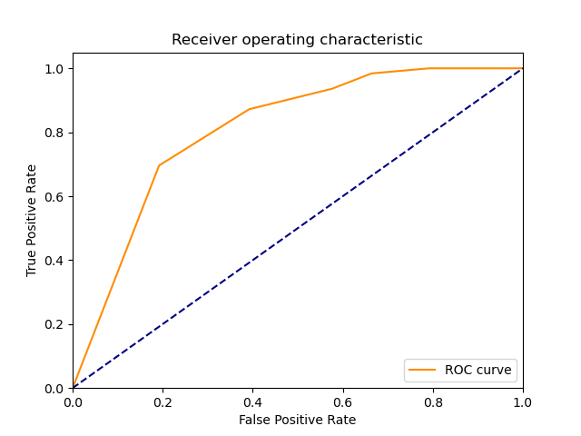 |
| 0 |
DiscreteNBC |
DiscreteNBC |
360.515321 |
195.296878 |
103 |
58 |
67 |
22 |
0.824 |
0.464 |
0.605882 |
0.644 |
0.356 |
0.698305 |
0.883840 |
0.001937 |
0.003576 |
 |
 |
 |
| 4 |
GaussianNBC |
Gaussian Naive Bayes (GaussianNB) |
3.348336 |
1.442367 |
112 |
41 |
84 |
13 |
0.896 |
0.328 |
0.571429 |
0.612 |
0.388 |
0.697819 |
0.847384 |
0.208408 |
0.483801 |
 |
 |
 |
| 3 |
ComplementNBC |
The Complement Naive Bayes classifier described in Rennie et al |
1.910793 |
0.203145 |
105 |
47 |
78 |
20 |
0.840 |
0.376 |
0.573770 |
0.608 |
0.392 |
0.681818 |
0.835788 |
0.356825 |
3.356312 |
 |
 |
 |
| 5 |
MultinomialNBC |
Naive Bayes classifier for multinomial models |
1.921741 |
0.218736 |
105 |
47 |
78 |
20 |
0.840 |
0.376 |
0.573770 |
0.608 |
0.392 |
0.681818 |
0.835788 |
0.354792 |
3.117087 |
|
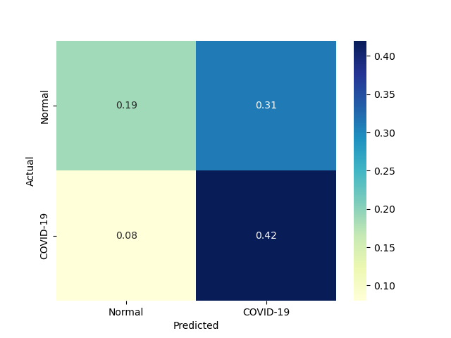 |
|
| 2 |
BernoulliNBC |
Naive Bayes classifier for multivariate Bernoulli models |
2.582877 |
0.468715 |
106 |
23 |
102 |
19 |
0.848 |
0.184 |
0.509615 |
0.516 |
0.484 |
0.636637 |
0.730691 |
0.246484 |
1.358259 |
 |
 |
 |
{kind=link}
{kind=link}
{kind=link}
{kind=link}
{kind=link}
{kind=link}
{kind=link}
{kind=link}
{kind=link}
{kind=link}
{kind=link}
{kind=link}
{kind=link}
{kind=link}
{kind=link}
{kind=link}